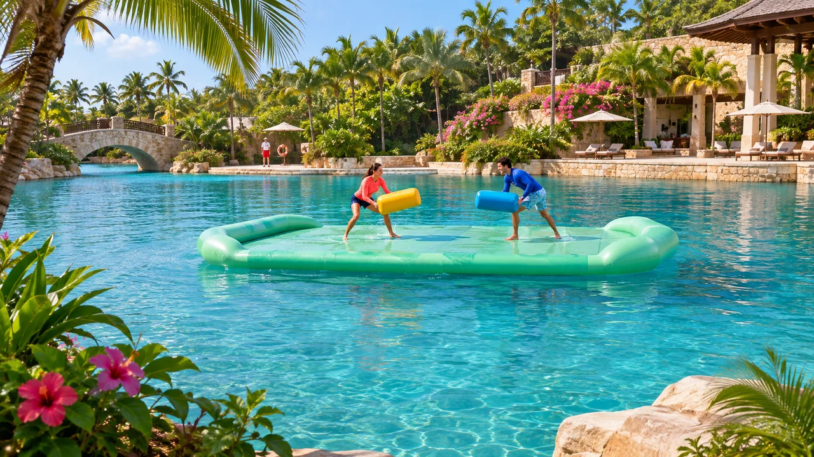
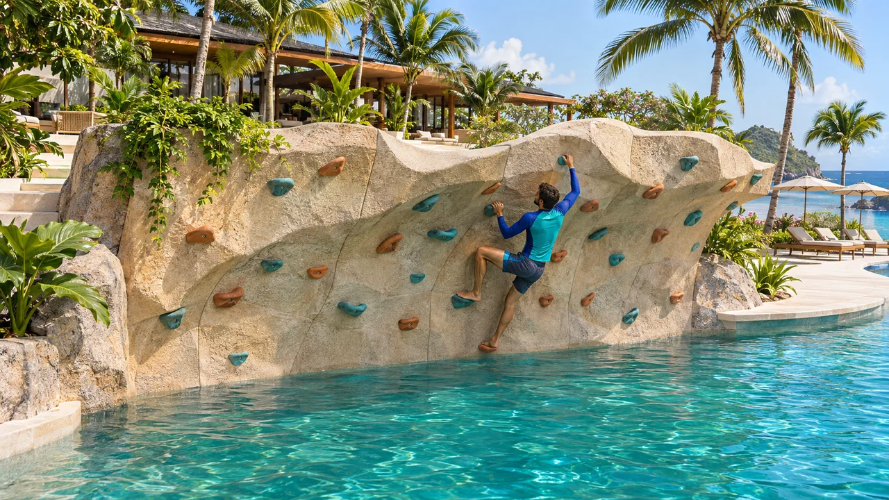
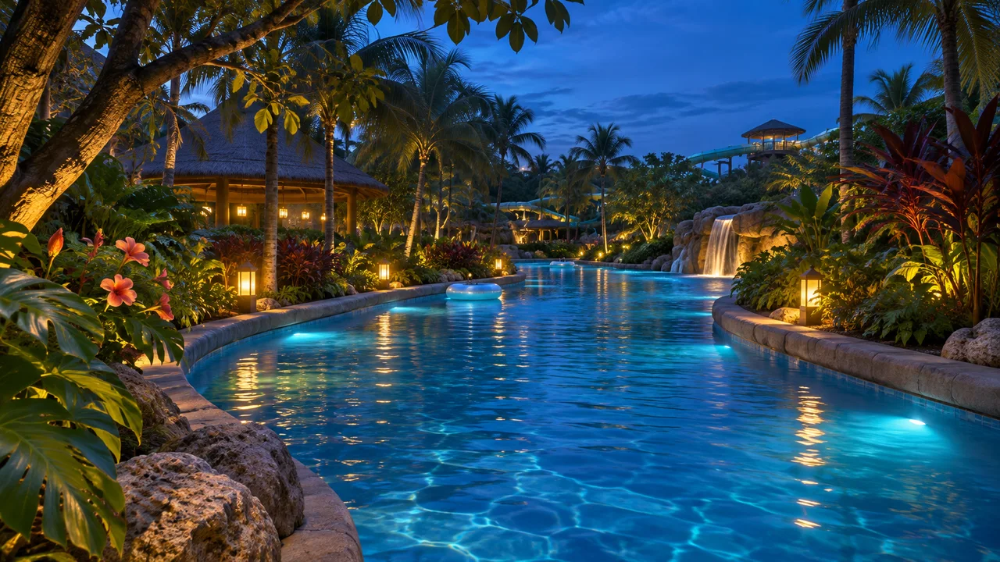

01 / 水上ミニゲーム
ラグーン・バトル
揺れる浮島でバランスを取りながら、柔らかいパッドで押し合うミニゲーム。水しぶきが上がるたび、プールサイドの観客も盛り上がります。
グループでプールサイドから観戦 景観イメージ
景観イメージBLUE LAGOON WORLD
水の上で競う。水の中をのぞく。夜は浮き輪に身を任せる。同じラグーンでも、過ごし方はひとつじゃありません。
SPLASH & PLAY

01 / 水上ミニゲーム
揺れる浮島でバランスを取りながら、柔らかいパッドで押し合うミニゲーム。水しぶきが上がるたび、プールサイドの観客も盛り上がります。
グループでプールサイドから観戦
02 / 水上クライミング
水面に張り出した岩壁を、水着のまま登る。いちばん上のホールドにタッチしたら、スタッフの案内で水へ。登るだけじゃなく、水に戻るところまでが体験です。
水着で参加FIND & EXPLORE
03 / 浅いプールで遊ぶ
浅いプールで、ゴーグル越しに宝の紋章を探します。見つけた印を仲間と見せ合う、親子でも楽しめる宝探し。
親子で04 / 服のまま観光
水面より低い位置を歩くガラス回廊。気泡と光がガラスの向こうを流れます。水着に着替えず、濡れずに楽しめます。
泳がず楽しめる
05 / AFTER DARK
日が暮れると、昼の流れるプールが光の回廊に。浮き輪に身を任せて、頭上の星と水面の反射を眺める夜のひと巡り。
夕暮れ以降の体験PLAN YOUR VISIT
WATER PARK
波のプールや流れる川、スライダーが並ぶウォーターパーク。遊ぶエリアと、家族で過ごしたり日陰で休んだりできるエリアを分けています。
行き方：西マリン駅｜パレス中央から列車で約13分
交通時間は作中の目安です。記載がない場合、待ち時間・駅から施設への移動は含みません。アクティビティの実施時間や参加条件は、この試作版には掲載していません。
KEEP EXPLORING